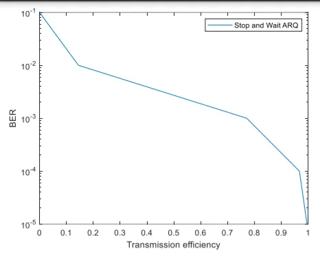
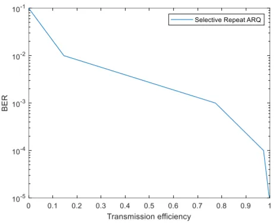
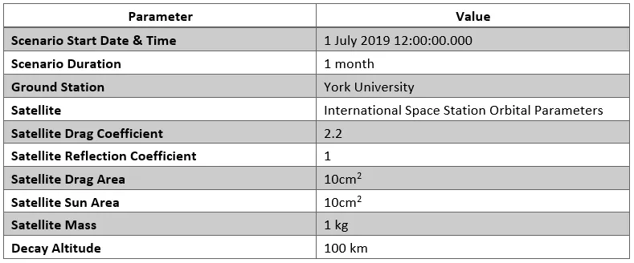
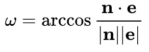

I have worked with Linux based and Windows based OS to develop programs for a variety of functions. I am greatly comfortable with Python and MATLAB and familiar with C and C++. Although most programs I have written are command line programs, I am currently learning how to implement them with a Web GUI. I can develop python-based web development using Flask and I am currently learning more prevalent frameworks like MERN stack. Here are some of my works:
CS50 Finance: A stock management app
I developed a basic stock management app deployed using FLASK.
Matlab programs made to calculate the orbital decay with height of objects in space. Also plotting ideal and actual Solar irradiance graphs for comparison.
Transmission efficiency of ARQ protocols.
Matlab programs made to calculate the GO Back N, STOP and WAIT and SELECTIVE REPEAT ARQ protocols for different bit error rates.
Calculating orbits using Kepler Laws
Matlab programs made to calculate various orbits based on a stepwise method using the Kepler Laws.
Orbital Lifetime
Using MATLAB and STK to simulate orbits and get data.
Cross-platform Programming
Summary
The purpose of this is to familiarize, setup and communicate with a Raspberry PI computer. The PI computer is to be setup through the Raspian OS on a connected bootable disk. It is then to interface with a another computer, that communicates to it to transfer an executable built within a VM on it.
Setting up the Raspberry PI computer
Downloaded the Raspian OS image file on a computer and flashed the image on a MicroSD card to create a bootable disk.
Inserted in the bootable disk in Raspberry computer. The HDMI cable is used connect it to an external monitor. An ethernet cable is used to connect it to the communicating computer. Peripherals like the mouse and keyboard are also connected.
The PI computer is powered on and the OS is booted.
SSH is enabled from the PI configuration.
The DHCP configuration is changed by accessing the dhcpcd.conf file on bash. It is changed so the computer has a static IP of 192.168.0.11 . This would be used to communicate with the PI.
Communicating with the Raspberry PI computer
Set up the MOBA-Xtreme SSH session with Raspberry PI computer through the static IP.
Ran the command startlxde to start a lightweight desktop environment on the computer.
Programming on Linux Mint VM
Initialized the VM on Virtual Box
Downloaded and extracted Raspi toolchain to the /opt directory.
Created an Hello World project that utilizes the cross compiler for Raspian OS. This was done by assigning the cross compiler prefix as arm-linux-gnueabhif- and path as /opt/cross-pi-gcc/bin
Built an executable based on the cross compiler.
Sending the executable to PI computer
Ensured that SSH was on by pinging the static IP the raspberry PI was assigned to.
Raspberry PI did not ping on the VM even though it responds to pings on the host machine. SSH is on
Tried to implement a secure copy by using scp command as follows with the command first, then the file address of the file to be copied and the hostname@ipaddress:/directory of the PI computer. scp Lab7 pi@192.168.0.11:/
As assumed the command failed with response “Host unreachable”. File transfer was not possible on the VM
The file sent on the host computer’s command line using the same scp command. The PI computer received the file.
Running the executable on PI computer
Opened bash and changed directory to the one containing the executable.
The executable is ran using the following command: ./Lab7
Results
The bottom screenshot shows the output of the running the executable on the LXDE
The Raspberry PI was properly setup and functioning. A SSH session was successfully setup with PI computer on the Static IP. An executable was successfully built from the Hello World c++ project using the cross compiler. The SSH link could not be accessed on VM (One possible reason was no access to ethernet adapter within the VM. Added a bridged adapter to the ethernet adapter but this still didn’t solve the problem.). Hence secure copy to the PI computer didn’t run on the VM. File was nevertheless transferred to the Raspberry PI using secure copy on host PC (Windows). The executable successfully ran with the desirable output “Hello World”.
Orbital Decay and Radiation
Calculating Orbital Decay
We have a satellite orbiting Earth at the height of 250 km from surface. At this height atmospheric density is ρ=3.25 x 10-10 kg m-3 and the scale height of 9.12km. The satellite has a mass of 70kg, a crossectional area of 1.5 m2. Using this information I have calculated and plotted the orbital decay upto 10 orbits.
Solar Radiation spectrum
Using Boltzmann formula for Irradiance, we can calculate the solar radiation spectrum across various wavelengths. This is plotted with the real data of solar spectrum that reflects atmospheric absorption. The results are as follows:
The actual curve is not smooth. There are fluctuations resultant of actual fluctuations caused by solar oscillations and disturbances. Due to earth’s elliptical average, the irradiance value can vary a lot. Therefore due to these anomalies the actual solar constant would be smaller.
Download
Click below to download the code for plots and calculations
Transmission efficiency of ARQ protocols
Calculating transmission for an MEO satellite
Assuming a MEO satellite at a geocentric circular orbit of radius 9000km. It has a transmission rate of 4 kbps and the size of the frame is 136 bits. The bit error rate is kept at 10-3. The satellite uses the go-Back n ARQ protocol for a duration of 2hrs. Based on this information, I have calculated the transmission efficiency:
However if all three protocols, ‘Stop-and-Wait ARQ’, ‘Go-Back-n ARQ’ and ‘Selective Repeat ARQ’ are considered, which protocol allows for highest throughput or transmission efficiency?
For Go-Back N ARQ the transmission efficiency is calculated to be 56.7%
For Stop and Wait ARQ the transmission efficiency is 76.9%
For Selective Repeat ARQ the transmission efficiency is 77.4%
Therefore, Selective Repeat ARQ is the most efficient form of protocol for transmission.
In the case where bit error rate is at 10-5
For Go-Back N ARQ the transmission efficiency increases to 99.2%
For Stop and Wait ARQ the transmission efficiency increases to 99.6%
For Selective Repeat ARQ the transmission efficiency increases to 99.72%
As the BER decreases to 10-5, the transmission efficiency reaches closer to 100%.
This trend can be better visualized when plotting the transmission efficiency with all the protocols with BER = [10-1,10-2,10-3,10-4,10-5]


Download
Click below to download the code for plots and calculations
Orbital Decay and Solar Radiation
Kepler's 1st Law (derived from the course lab manual)
Kepler’s first law can be expressed mathematically, in polar coordinates, as:
Where p is the semi-latus rectum and is the eccentricity, p is defined as follows:
Where a is the semi-major axis, and b is the semi-minor axis of the orbit. For closed orbits, the periapsis (minimum distance between the two bodies) and apoapsis (maximum) occur at:
and the relationship relating the eccentricity to the major and minor axes is given by:
and for a hyperbolic orbit, we have:
Eccentricity plots based on Kepler's first law.
Plotted the paths for various eccentricities on the same graph. Setted a = 20. Computed the radius using θ = 0 : 0.01 ∗ pi : 2 ∗ pi. Converted to cartesian coordinates and plot. Set the axes to equal scale by including the command: axis equal. Set the axis limits to x = [−40,80] and y = [−30,30] using the command: axis([-40 80 -30 30]).
The semi-major axis for each trajectory is:
The semi-minor axis for e=0 is 20.000000
The semi-minor axis for e=0.5 is 17.320508
The semi-minor axis for e=1.0 is 0.000000
The semi-minor axis for e=1.5 is 22.360680
Kepler's second law (derived from the course lab manual)
In Kepler’s second law, we have the scenario where the change in area (dA) swept out by the orbit in a small amount of time time, dt is:
so long as the fractional change in time is consistent, this change in area is constant through out the entire orbit.
Testing Kepler's 2nd Law with Mars
Using data from https://nssdc.gsfc.nasa.gov/planetary/factsheet/marsfact.html we find the first derivative of area relative to time:
Speed at perihelion (vp) – 26.5 km/s, Perihelion distance (rp) – 2.06x108 km
Speed at aphelion (va) – 22.0 km/s, Aphelion distance (va) – 2.49x108 km
So da/dt is quite similar for both.
Calculations in MATLAB
All units in km
The r at perihelion is 206609480.000000
The v at perihelion is 26.571262
Fractional change in area at perihelion is 2744937340.591403
The r at aphelion is 249230520.000000
The v at aphelion is 22.027297
Fractional change in area at perihelion is 2744937340.591403
Plot for the orbit
Kepler's Third Law
This can be stated as:
Orbital plots of terresterial planets and gaseous planets
The units are in seconds
The time period for Mercury is 7579137.728477
The time period for Venus is 19361671.381209
The time period for Earth is 31477435.584332
The time period for Mars is 59185925.255163
The time period for Jupiter is 373707416.754456
The time period for Saturn is 933729803.486922
The time period for Neptune is 2648382260.608438
The time period for Uranus is 5184549079.706688
The time period for Pluto is 7808735669.732601s
Download MATLAB code
Click below to download the code for plots and calculations
Orbital Lifetime
Summary
In this work I will study the effects of various atmospheric models on the orbital lifetime of satellites as well as iteratively solve problems in STK with the help of MATLAB. The reference parameters are given in the table below.

Calculating Orbital Lifetime under different atmospheric models
Jacchia 71:
The output for lifetime using Jacchia71 model:
“AssignSat decay is estimated to be on 16 Jan 2021 17:06:53.432 after 8894 orbits.The lifetime is 1.5 years.”
Jacchia-Roberts
The output for lifetime using Jacchia-Roberts:
“AssignSat decay is estimated to be on 17 Jan 2021 04:42:18.985 after 8902 orbits.The lifetime is 1.5 years.”
Harris-Priester
The output for lifetime using Harris-Priester:
“AssignSat decay is estimated to be on 23 Apr 2021 04:31:02.547 after 10412 orbits.The lifetime is 1.8 years.”
Now, assuming the default atmospheric model is used, and in MATLAB, I will plot a time history of the Keplerian orbital elements and explain the differences.
The default model is Jacchia70Lifetime. Using this model the Graphs are as follows (x axis is time in seconds for all graphs). Semi Major Axis (units in km):
Since the satellite will deorbit in 1.7 years, we might not see any big changes in the orbit size in a month. But small fluctuations are possible as the satellite might be affected by the gravity of other significant heavenly bodies such as Moon (due to its proximity) and Sun (due to its size and mass). Eccentricity
Eccentricity of an orbit stays mostly common as angular momentum is conserved. Therefore, the changes in eccentricity are minute (scale of 10-4). The minute changes can be related to a plethora of factors, ranging anywhere from changes in external gravitational forces to thrust from incident sunlight, which are quite insignificant compared to the centripetal force causing the satellite to orbit. Inclination
Inclination is also dependent on momentum based on the following equation:
H is angular momentum. As we have previously mentioned, small changes happen to the angular momentum, which in turn affects the inclination as well. Argument of Perigee
Argument of perigee is defined as the following formula:

The e stands for eccentricity vector and n is the vector pointing towards the ascending node. The variability in the eccentricity and as it will be later seen, the changes in the ascending node are the cause of these smooth fluctuations in the above graph. Longititude of the Ascending Node
The periodic fluctuations in the longitude reflect the periodic cycle of Earth’s rotation, which is skewed due to earth’s axial tilt. Since the fixed reference plane is the equator, the orbital plane wobbles around it every rotation, causing the change in the longitude of the ascending node. True Anomaly
The regular periodic changes in the true anomaly is nothing but the indication of the satellite moving along the orbit. Therefore every time the satellite approaches the periapsis in the direction of the orbital velocity, true anomaly approaches 360 degrees and it resets to zero after that.
Designing a Hohmann transfer
In the following I have designed a Hohmann transfer such that the satellite starts off in an ISS orbit, and ends in an orbit that provides on average (over the scenario), 10 minutes of communication with the ground station. This is checked through plots of communication intervals against time in MATLAB. I have also explained my design choices and generated tables of semi-major axis and symmetry, solving the problem iteratively. Design Choice 1
I chose the Radius of Apoapsis as 7000 km as lower values gave average access time under 10 minutes. Higher orbits would be more expensive. Therefore this seems to be ideal. Heres a display of the STK screen with the orbit path and accesses:
The following graph displays the accesses and their communication duration over time. The time is seconds.
Communication duration for various access intervals fluctuate a lot. However the average comes to 733.003 seconds which is 12 minutes. This is slightly above the required duration, however it also offsets the lower intervals. Making most intervals above the threshold. This will help to maximise efficiency of each access interval.
The following graph displays the semi-major axis over time. The time is seconds.
The steep early increase in the semi-major axis indicates the Hohmann transfer. The final line for semi-major axis is our final orbit.
The following graph displays the eccentricity axis over time. The time is seconds.
The sudden increase in Eccentricity can be attributed to the transfer orbit that has more elliptic orbit than either the parking orbit or the final orbit.
Download the Matlab code (STK required)
Click below to download the code for plots and calculations


 The steep early increase in the semi-major axis indicates the Hohmann transfer. The final line for semi-major axis is our final orbit.
The steep early increase in the semi-major axis indicates the Hohmann transfer. The final line for semi-major axis is our final orbit.